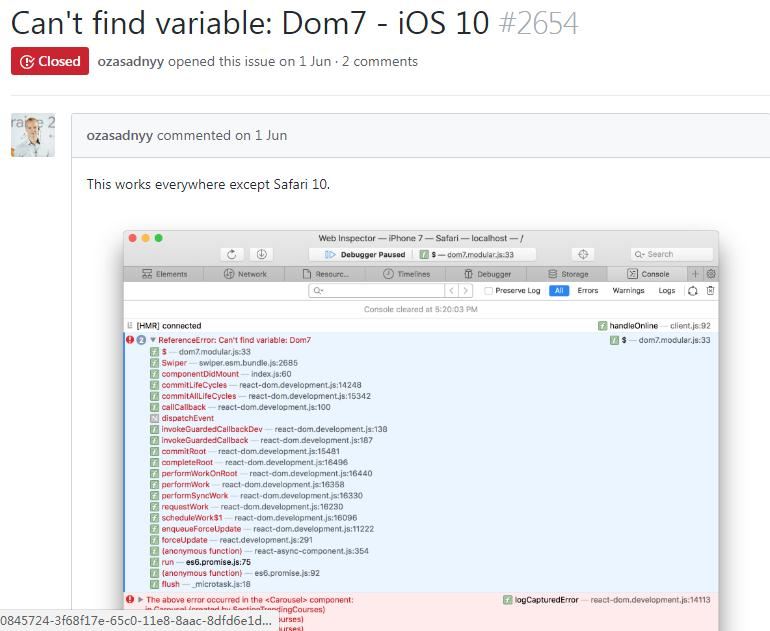
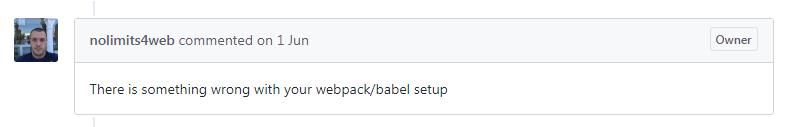
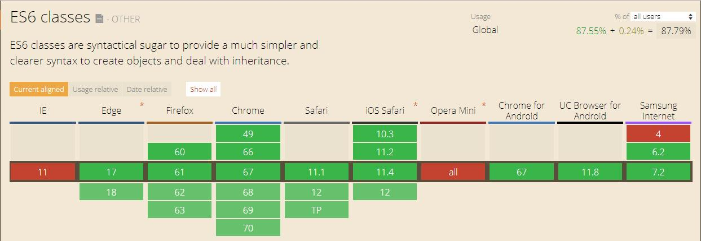
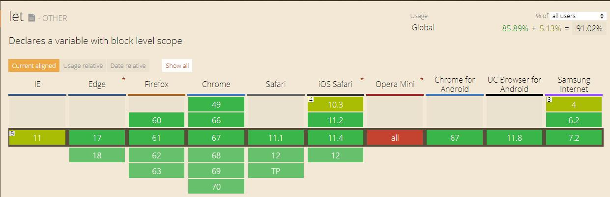
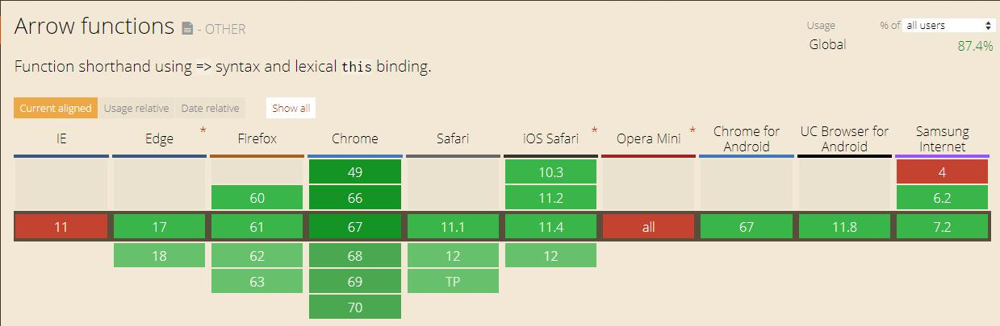
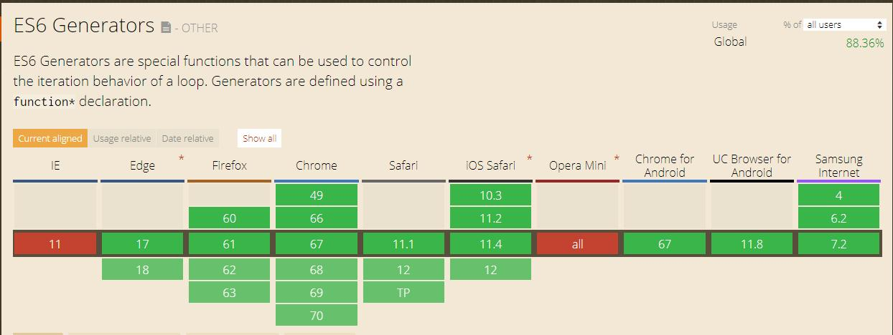
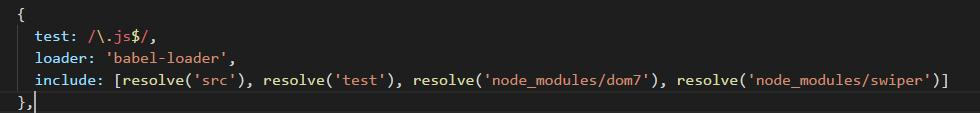

和生活首页在部分机型下白屏原因分析
问题
和生活首页在世界杯活动上线后，发现极个别iphone手机（1部iphone6plus、1部iphone7）首页出现白屏，但其他同事的iphone6plus、iphone7正常
问题分析
出现问题的两部手机分别是：iphone6plus（ios8.2）、iphone7（ios10.1.1）；其他同型号未出现问题的手机，系统均是ios11，因此推断是ios兼容性导致的问题；
ios8.2
借助mac系统的调试工具查看，发现在ios8下首页出现报错信息，信息显示不支持Class语法；
Class语法是ES6标准中新增的，在ios8并不支持；
查找错误信息所在位置，是swiper组件依赖的Dom7库；
swiper是首页改版时引入的新的轮播图插件，也就是说导致ios8，白屏的原因是swiper中有ES6的语法；
ios10.1.1
在swiper的github上找到关于ios10的issue

issue中并没有给出具体的解决方案；

在framework7关于Dom7的issue中，找到：

确保您的webpack / babel还将导入的F7转换为ES5，并解析F7的节点模块
那么基本可以确认ios10.1.1也不支持ES6的语法；
查询一下:  可以看到，ES6的class语法是从ios10.3版本开始兼容的，ios10.1.1并不兼容该语法
与印象中不同，实际上几乎所有的ES6语法都是从ios10.3开始兼容的   
解决方案
按照issue中所述的解决方案，只需要将ES6的语法转为ES5即可；
webpack中的babel插件默认是不会对node_modules下的文件进行转换的，因此需要显示的将swiper和dom7的文件进行转换 